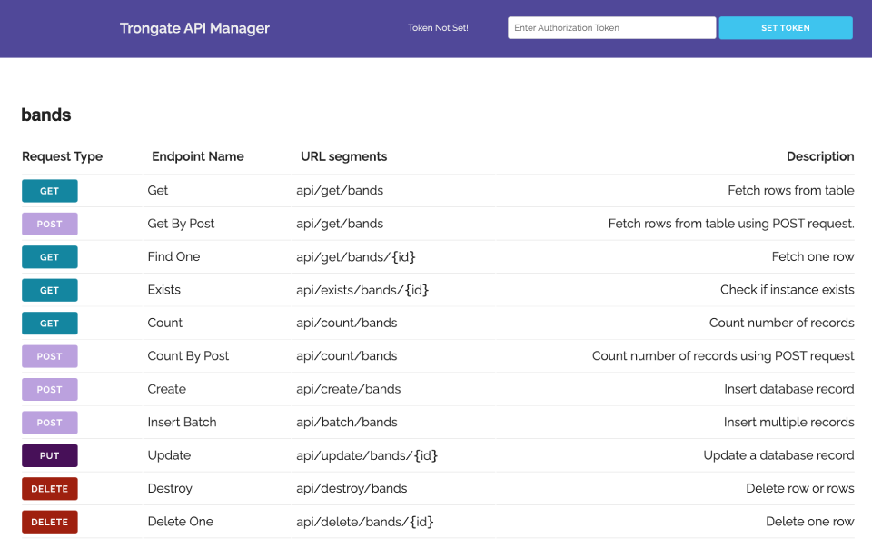

This entire chapter is dedicated to showing you everything you need to know about how to create your own custom API endpoints with Trongate. If you're a JavaScript developer then you're in for a treat! We have lots of powerful features and everything you need is right here - but first, enjoy this short video.
[youtube]{
"headline": "Video Demo",
"info": "Here's a short video, demonstrating how to create custom API endpoints with Trongate",
"videoId":"HQm8MtKNFmo"}
[/youtube]

With Trongate's API Explorer, developers who like JavaScript can easily create secure, custom API endpoints in record time. Let's get into this!